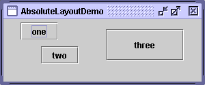

Feedback Form
|
|
Start of Tutorial > Start of Trail > Start of Lesson |
Search
Feedback Form |
Although it's possible to do without a layout manager, you should use a layout manager if at all possible. A layout manager makes it easier to adjust to look-and-feel-dependent component appearances, to different font sizes, to a container's changing size, and to different locales. Layout managers also can be reused easily by other containers as well as other programs.If a container holds components whose size isn't affected by the container's size or by font and look-and-feel and language changes, then absolute positioning might make sense. Desktop panes, which contain internal frames
, are in this category. The size and position of internal frames doesn't depend directly on the desktop pane's size. The programmer determines the initial size and placement of internal frames within the desktop pane, and then the user can move or resize the frames. A layout manager is unnecessary in this situation.
Another situation in which absolute positioning might make sense is that of a custom container that performs size and position calculations that are particular to the container, and perhaps require knowledge of the container's specialized state. This is the situation with split panes
Here's a snapshot of a frame whose content pane uses absolute positioning.
 You can run AbsoluteLayoutDemo using JavaTM Web Start
AbsoluteLayoutDemo.java. The following code snippet shows how the components in the content pane are created and laid out.
pane.setLayout(null); JButton b1 = new JButton("one"); JButton b2 = new JButton("two"); JButton b3 = new JButton("three"); pane.add(b1); pane.add(b2); pane.add(b3); Insets insets = pane.getInsets(); Dimension size = b1.getPreferredSize(); b1.setBounds(25 + insets.left, 5 + insets.top, size.width, size.height); size = b2.getPreferredSize(); b2.setBounds(55 + insets.left, 40 + insets.top, size.width, size.height); size = b3.getPreferredSize(); b3.setBounds(150 + insets.left, 15 + insets.top, size.width + 50, size.height + 20); ...//In the main method: Insets insets = frame.getInsets(); frame.setSize(300 + insets.left + insets.right, 125 + insets.top + insets.bottom);
|
|
Start of Tutorial > Start of Trail > Start of Lesson |
Search
Feedback Form |
Copyright 1995-2004 Sun Microsystems, Inc. All rights reserved.